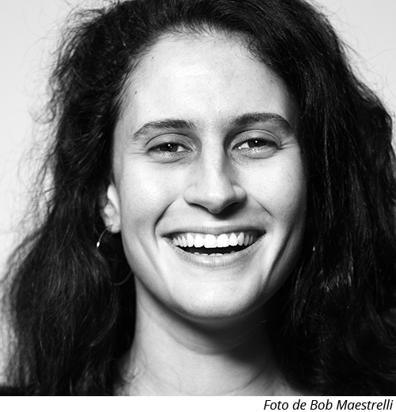

CECILIA RIPOLL

Atriz, diretora e dramaturga, Cecilia Ripoll iniciou sua trajetória no teatro junto à Companhia do Gesto em 2001. É formada em Artes Cênicas pela UNIRIO e recebeu o III Prêmio Jovens Dramaturgos Escola Sesc por seu texto infanto-juvenil PACO E O TEMPO. Fundou o Grupo Gestopatas em 2014, e assina direção e dramaturgia de seus mais recentes trabalhos: PACO E O TEMPO (estreou em 2016) e PAREIDOLIA - DEPOIS DO FIM (estreou em 2017). Sempre cultivou o hábito da escrita e, de alguns anos para cá, enxergou no trabalho teatral de grupo a possibilidade de potencializar sua prática enquanto experiência viva de intercâmbio junto aos atores.
Contato:
ceciliaripoll@gmail.com